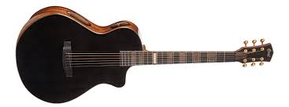

GUITAR

Acoustic Guitar
Acoustic guitars are great for beginners as they are simple, easy to use and have
all you need to get started. There are no complications, what
you see is what you get. The acoustic guitar is a great starting point as you don't have to worry about plugging it in to anything.
Click here to go to inlined style